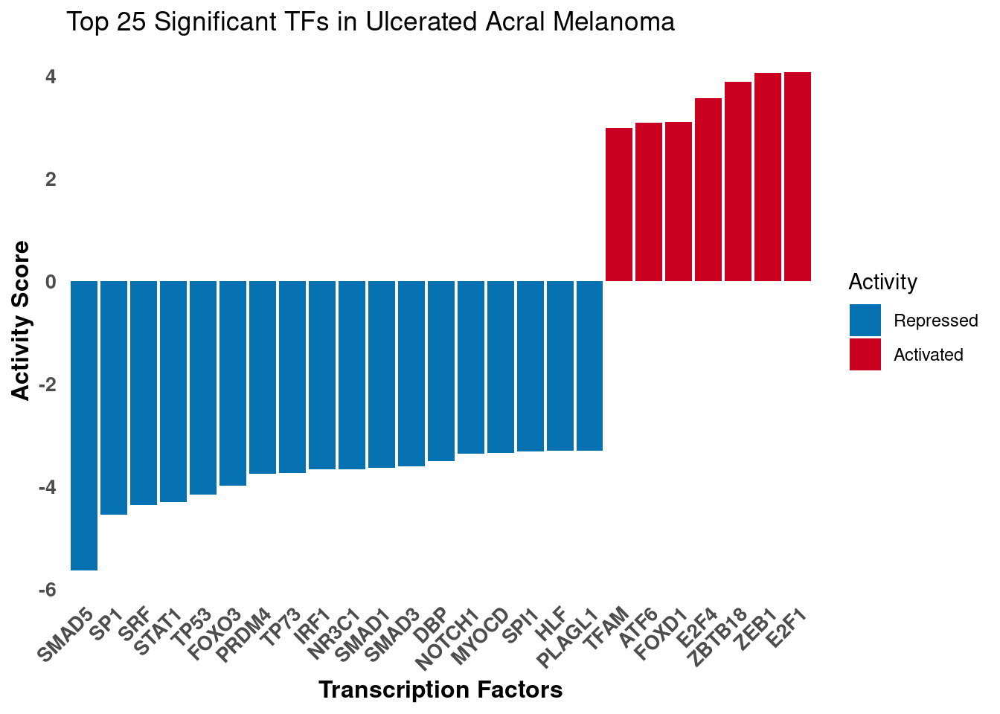
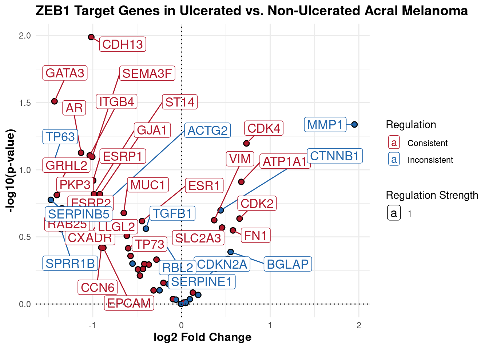

Last updated: 2025-04-04
Checks: 7 0
Knit directory: Ulceration_paper_github/
This reproducible R Markdown analysis was created with workflowr (version 1.7.1). The Checks tab describes the reproducibility checks that were applied when the results were created. The Past versions tab lists the development history.
Great! Since the R Markdown file has been committed to the Git repository, you know the exact version of the code that produced these results.
Great job! The global environment was empty. Objects defined in the global environment can affect the analysis in your R Markdown file in unknown ways. For reproduciblity it’s best to always run the code in an empty environment.
The command set.seed(20250330) was run prior to running
the code in the R Markdown file. Setting a seed ensures that any results
that rely on randomness, e.g. subsampling or permutations, are
reproducible.
Great job! Recording the operating system, R version, and package versions is critical for reproducibility.
Nice! There were no cached chunks for this analysis, so you can be confident that you successfully produced the results during this run.
Great job! Using relative paths to the files within your workflowr project makes it easier to run your code on other machines.
Great! You are using Git for version control. Tracking code development and connecting the code version to the results is critical for reproducibility.
The results in this page were generated with repository version 1644b9e. See the Past versions tab to see a history of the changes made to the R Markdown and HTML files.
Note that you need to be careful to ensure that all relevant files for
the analysis have been committed to Git prior to generating the results
(you can use wflow_publish or
wflow_git_commit). workflowr only checks the R Markdown
file, but you know if there are other scripts or data files that it
depends on. Below is the status of the Git repository when the results
were generated:
Ignored files:
Ignored: .Rproj.user/
Untracked files:
Untracked: DE_results_ulceration_ranked.rds
Untracked: data/DE_results.rds
Untracked: data/DE_results_ranked.rds
Untracked: data/DE_results_ulceration_rankednew.rds
Untracked: data/annotation.rds
Untracked: data/clinical_am_prim.csv
Untracked: data/collectri_network_omnipath.rds
Untracked: data/normalized_counts.rds
Untracked: data/rawcounts_am.rds
Untracked: omnipathr-log/
Untracked: ulceration_combined_panel.pdf
Untracked: ulceration_mitotic.pdf
Untracked: volcanoplot.pdf
Unstaged changes:
Modified: README.md
Modified: analysis/_site.yml
Deleted: analysis/teeth.Rmd
Deleted: data/teeth.csv
Note that any generated files, e.g. HTML, png, CSS, etc., are not included in this status report because it is ok for generated content to have uncommitted changes.
These are the previous versions of the repository in which changes were
made to the R Markdown
(analysis/test_render_TFactivity.Rmd) and HTML
(docs/test_render_TFactivity.html) files. If you’ve
configured a remote Git repository (see ?wflow_git_remote),
click on the hyperlinks in the table below to view the files as they
were in that past version.
| File | Version | Author | Date | Message |
|---|---|---|---|---|
| Rmd | 1644b9e | Estef Vazquez | 2025-04-04 | Update |
| html | 5c68f52 | Estef Vazquez | 2025-04-03 | Build site. |
| Rmd | ca58350 | Estef Vazquez | 2025-04-03 | Publish transcriptomic analyses |
This analysis uses decoupleR (Badia et al., 2022) to analyze transcription factor (TF) activity differences between ulcerated and non-ulcerated acral melanoma samples.
# Load required packages
library(tidyverse)
library(decoupleR)
library(OmnipathR)
library(pheatmap)
library(ggrepel)
library(RColorBrewer)
library(here)# Data pre-processing
cts <- readRDS(here("data", "rawcounts_am.rds"))
cts <- as.matrix(cts)
# Define filtering
min_count_threshold <- 15
# Filter genes with insufficient counts
total_counts_per_gene <- rowSums(cts)
filtered_genes <- cts[total_counts_per_gene >= min_count_threshold, ]
# Check that number of samples matches metadata
stopifnot(ncol(filtered_genes) == nrow(metadata))
# Load normalized counts and convert to log2 scale
normalized_counts <- readRDS(here("data", "normalized_counts.rds"))
logcounts <- log2(normalized_counts + 1)# Preparing expression mt
logcounts_df <- as.data.frame(logcounts) %>%
rownames_to_column(var = "gene")
# Replace NAs with zeros and format
counts_input <- logcounts_df %>%
dplyr::mutate_if(~ any(is.na(.x)), ~ if_else(is.na(.x), 0, .x)) %>%
column_to_rownames(var = "gene") %>%
as.matrix()
# Convert to df for ID mapping
counts_input <- as.data.frame(counts_input) %>%
rownames_to_column(var = "ENSEMBL_GENE_ID")
# Load gene annotation for ID mapping
gene_ann <- readRDS(here("data", "annotation.rds"))
# Join and format
counts_input <- counts_input %>%
inner_join(gene_ann, by = "ENSEMBL_GENE_ID") %>%
relocate(external_gene_name, .after = ENSEMBL_GENE_ID)
# Set row names
names <- make.unique(counts_input$external_gene_name)
rownames(counts_input) <- names
counts_input <- counts_input[, -1]
counts_input <- counts_input[, -1] # Loading TF network
net <- readRDS(here("data", "collectri_network_omnipath.rds"))
#net = get_collectri(organism='human', split_complexes=FALSE)
# Check overlap between gene sets
gene_in_counts <- rownames(counts_input)
gene_in_network <- unique(net$target)
overlap <- intersect(gene_in_counts, gene_in_network)
# How many TFs have at least 5 targets
tf_target_counts <- table(net$source[net$target %in% gene_in_counts])
tf_sufficient <- names(tf_target_counts[tf_target_counts >= 5])# Calculate TF Activity Using ULM
# Make sure dplyr is loaded
library(dplyr)
# Run univariate linear model on expression matrix
TF_act_mat <- decoupleR::run_ulm(mat = counts_input,
net = net,
.source = 'source',
.target = 'target',
.mor = 'mor',
minsize = 5)
# Add adjusted p-values
TF_act_mat <- TF_act_mat %>%
group_by(source) %>%
mutate(padj = p.adjust(p_value, method = "BH"))
# Filter significant TFs and rank by score direction
significant_TFs <- TF_act_mat %>%
filter(padj < 0.05) %>%
group_by(source) %>%
summarise(
mean_score = mean(score),
padj = dplyr::first(padj)
) %>%
mutate(
rnk = NA,
msk = mean_score > 0
)
# Rank positive and negative scores separately
significant_TFs$rnk[significant_TFs$msk] <- rank(-significant_TFs$mean_score[significant_TFs$msk])
significant_TFs$rnk[!significant_TFs$msk] <- rank(-abs(significant_TFs$mean_score[!significant_TFs$msk]))
# Select top TFs based on ranking
n_tfs <- 50
top_tf <- significant_TFs %>%
arrange(rnk) %>%
head(n_tfs) %>%
pull(source)
# Create matrix of TF activities
TF_act_mat_wide <- TF_act_mat %>%
filter(source %in% top_tf) %>%
tidyr::pivot_wider(
id_cols = 'condition',
names_from = 'source',
values_from = 'score'
) %>%
tibble::column_to_rownames('condition') %>%
as.matrix()
# Standardize (convert to z-scores)
final_tfs <- scale(TF_act_mat_wide)
final_tfs <- as.data.frame(final_tfs)
# Make matrix
final_tfs_mat <- as.matrix(final_tfs)
# Prepare summary table - add info about direction of effect and significance
tf_info <- significant_TFs %>%
filter(source %in% top_tf) %>%
arrange(rnk) %>%
dplyr::select(source, mean_score, padj, rnk)Analysis of the complete expression matrix. Heatmap shows the activity of the top 50 transcription factors across samples, grouped by ulceration status.
# Create annotation df for samples
annotation_row <- metadata %>%
select(sample_id, ulceration) %>%
as.data.frame() %>%
# Make sure sample_id values match rownames in final_tfs
filter(sample_id %in% rownames(final_tfs)) %>%
column_to_rownames('sample_id') %>%
mutate(ulceration = factor(ulceration,
levels = c("1", "0"),
labels = c("Ulcerated", "Non-ulcerated")))
# Verify annotation matches the data
cat("Annotation dimensions:", dim(annotation_row)[1], "samples x", dim(annotation_row)[2], "features\n")Annotation dimensions: 59 samples x 1 featurescat("All annotation samples are in the TF activity matrix:", all(rownames(annotation_row) %in% rownames(final_tfs)), "\n")All annotation samples are in the TF activity matrix: TRUE cat("All TF activity matrix samples are in the annotation:", all(rownames(final_tfs) %in% rownames(annotation_row)), "\n")All TF activity matrix samples are in the annotation: TRUE # Color palette
colors <- rev(RColorBrewer::brewer.pal(n = 11, name = "RdBu"))
colors.use <- grDevices::colorRampPalette(colors = colors)(100)
# Define breaks
my_breaks <- c(seq(-2, 0, length.out = ceiling(100 / 2) + 1),
seq(0.05, 2, length.out = floor(100 / 2)))
# Colors annotation
ann_colors <- list(
ulceration = c(
"Ulcerated" = "#E8CC03",
"Non-ulcerated" = "#730769"
)
)
tf_heatmap <- pheatmap::pheatmap(
mat = final_tfs_mat,
color = colors.use,
border_color = "white",
breaks = my_breaks,
annotation_row = annotation_row,
annotation_colors = ann_colors,
cellwidth = 8,
cellheight = 8,
treeheight_row = 10,
treeheight_col = 10,
fontsize_row = 8,
fontsize_col = 8,
show_rownames = TRUE,
show_colnames = TRUE,
annotation_names_row = TRUE,
annotation_legend = TRUE,
main = "Transcription Factor Activity by Ulceration Status",
annotation_legend_param = list(title = "Ulceration\nStatus"),
annotation_names_rot = 0,
annotation_width = unit(2, "cm"),
annotation_names_side = "left",
fontsize = 10,
annotation_names_size = 12
)
print(tf_heatmap)
| Version | Author | Date |
|---|---|---|
| 5c68f52 | Estef Vazquez | 2025-04-03 |
Activity inference using Univariate Linear Model (ULM) on differential expression results. DecoupleR fits a linear model that predicts the observed gene expression based on the TF’s TF-Gene interaction weights. The t-value of the slope is used as the activity score.
# Load differential expression results
results_DE <- readRDS(here("data", "DE_results.rds"))
# Extract statistics and filter
deg <- results_DE %>%
dplyr::select(log2FoldChange, stat, padj) %>%
filter(!is.na(stat)) %>%
filter(!is.na(padj))
# Sort based on t-statistic
deg <- deg[order(deg$stat), ]
# Add gene identifiers
gene_ann <- readRDS(here("data", "annotation.rds"))
deg <- deg %>%
rownames_to_column(var = "ENSEMBL_GENE_ID") %>%
inner_join(gene_ann, by = "ENSEMBL_GENE_ID") %>%
relocate(external_gene_name, .after = ENSEMBL_GENE_ID)
# Set gene symbols as row names
names <- make.unique(deg$external_gene_name)
rownames(deg) <- names
# Run ULM on DE t-statistic
TF_act_ulc <- run_ulm(
mat = deg[, 'stat', drop = FALSE],
net = net,
.source = 'source',
.target = 'target',
.mor = 'mor',
minsize = 5
)
# Add adjusted p-values and filter significant TFs
significant_TFs_adjusted <- TF_act_ulc %>%
mutate(padj = p.adjust(p_value, method = "BH")) %>%
filter(padj < 0.05)
# Save
# write_csv(significant_TFs_adjusted, "significant_TFs_ulceration.csv")
# Add ranking
TF_act_ulc <- significant_TFs_adjusted %>%
mutate(rnk = NA)
# Rank TFs by score (positive and negative separately)
msk <- TF_act_ulc$score > 0
TF_act_ulc[msk, 'rnk'] <- rank(-TF_act_ulc[msk, 'score'])
TF_act_ulc[!msk, 'rnk'] <- rank(-abs(TF_act_ulc[!msk, 'score']))
# Select top TFs for visualization
n_tfs_vis <- 25
TF_sorted <- TF_act_ulc %>%
arrange(rnk) %>%
head(n_tfs_vis) %>%
pull(source)
# Filter
TF_visualization <- TF_act_ulc %>%
filter(source %in% TF_sorted)
#saveRDS(TF_visualization, "top25_TFs_ulceration_vis.rds")# Visualizing top TFs
p1 <- ggplot(TF_visualization, aes(x = reorder(source, score), y = score)) +
geom_bar(aes(fill = score > 0), stat = "identity") +
scale_fill_manual(
values = c("#0571b0", "#ca0020"),
labels = c("Repressed", "Activated"),
name = "Activity"
) +
theme_minimal() +
theme(
axis.title = element_text(face = "bold", size = 12),
axis.text.x = element_text(angle = 45, hjust = 1, size = 10, face = "bold"),
axis.text.y = element_text(size = 10, face = "bold"),
panel.grid.major = element_blank(),
panel.grid.minor = element_blank(),
legend.position = "right"
) +
xlab("Transcription Factors") +
ylab("Activity Score") +
ggtitle("Top 25 Significant TFs in Ulcerated Acral Melanoma")
print(p1)
| Version | Author | Date |
|---|---|---|
| 5c68f52 | Estef Vazquez | 2025-04-03 |
# Define TF
tf <- 'ZEB1'
# Filter for ZEB1 targets
df <- net %>%
filter(source == tf) %>%
arrange(target) %>%
mutate(ID = target, color = "3") %>%
column_to_rownames('target')
# Find overlapping genes between DEGs and ZEB1 targets
inter <- sort(intersect(rownames(deg), rownames(df)))
df <- df[inter, ]
# Rename columns
deg_formatted <- deg %>%
dplyr::select(log2FoldChange, stat, padj) %>%
dplyr::rename(
logfc = log2FoldChange,
t_value = stat,
pval = padj
)
# Add DE statistics to df
df[, c('logfc', 't_value', 'pval')] <- deg_formatted[inter, c('logfc', 't_value', 'pval')]
# Color based on consistency between mode of regulation and observed changes
df <- df %>%
dplyr::mutate(color = dplyr::if_else(mor > 0 & t_value > 0, '1', color)) %>%
dplyr::mutate(color = dplyr::if_else(mor > 0 & t_value < 0, '2', color)) %>%
dplyr::mutate(color = dplyr::if_else(mor < 0 & t_value > 0, '2', color)) %>%
dplyr::mutate(color = dplyr::if_else(mor < 0 & t_value < 0, '1', color))
# Defining color
colors <- rev(RColorBrewer::brewer.pal(n = 11, name = "RdBu")[c(2, 10)])
p2 <- ggplot2::ggplot(
data = df,
mapping = ggplot2::aes(
x = logfc,
y = -log10(pval),
color = color,
size = abs(mor)
)
) +
ggplot2::geom_point(size = 2.5, color = "black") +
ggplot2::geom_point(size = 1.5) +
ggplot2::scale_colour_manual(
values = c(colors[2], colors[1], "grey"),
name = "Regulation",
labels = c("Consistent", "Inconsistent", "Unknown")
) +
ggrepel::geom_label_repel(
mapping = ggplot2::aes(
label = ID,
size = 1
),
max.overlaps = 20,
box.padding = 0.5,
label.padding = 0.2,
min.segment.length = 0
) +
ggplot2::theme_minimal() +
ggplot2::theme(
legend.position = "right",
plot.title = element_text(face = "bold", size = 14),
axis.title = element_text(face = "bold", size = 12)
) +
ggplot2::geom_vline(xintercept = 0, linetype = 'dotted') +
ggplot2::geom_hline(yintercept = 0, linetype = 'dotted') +
ggplot2::labs(
title = paste0(tf, " Target Genes in Ulcerated vs. Non-Ulcerated Acral Melanoma"),
x = "log2 Fold Change",
y = "-log10(p-value)",
size = "Regulation Strength"
) +
guides(size = guide_legend(title = "Regulation Strength"))
print(p2)
| Version | Author | Date |
|---|---|---|
| 5c68f52 | Estef Vazquez | 2025-04-03 |
This plot shows ZEB1 target genes and their differential expression pattern in ulcerated vs non-ulcerated acral tumours. Point size represents the predicted strength of ZEB1’s influence on each gene. Red points show genes that respond as expected to ZEB1 activity. Blue points show genes that respond opposite to how we’d expect based on ZEB1 activity
sessionInfo()R version 4.4.0 (2024-04-24)
Platform: x86_64-pc-linux-gnu
Running under: Ubuntu 22.04.4 LTS
Matrix products: default
BLAS: /usr/lib/x86_64-linux-gnu/blas/libblas.so.3.10.0
LAPACK: /usr/lib/x86_64-linux-gnu/lapack/liblapack.so.3.10.0
locale:
[1] LC_CTYPE=en_US.UTF-8 LC_NUMERIC=C
[3] LC_TIME=es_MX.UTF-8 LC_COLLATE=en_US.UTF-8
[5] LC_MONETARY=es_MX.UTF-8 LC_MESSAGES=en_US.UTF-8
[7] LC_PAPER=es_MX.UTF-8 LC_NAME=C
[9] LC_ADDRESS=C LC_TELEPHONE=C
[11] LC_MEASUREMENT=es_MX.UTF-8 LC_IDENTIFICATION=C
time zone: America/Mexico_City
tzcode source: system (glibc)
attached base packages:
[1] stats graphics grDevices utils datasets methods base
other attached packages:
[1] here_1.0.1 RColorBrewer_1.1-3 ggrepel_0.9.6 pheatmap_1.0.12
[5] OmnipathR_3.15.1 decoupleR_2.10.0 lubridate_1.9.4 forcats_1.0.0
[9] stringr_1.5.1 dplyr_1.1.4 purrr_1.0.2 readr_2.1.5
[13] tidyr_1.3.1 tibble_3.2.1 ggplot2_3.5.1 tidyverse_2.0.0
[17] workflowr_1.7.1
loaded via a namespace (and not attached):
[1] tidyselect_1.2.1 farver_2.1.2 blob_1.2.4
[4] R.utils_2.12.3 fastmap_1.2.0 promises_1.3.2
[7] XML_3.99-0.17 digest_0.6.37 timechange_0.3.0
[10] lifecycle_1.0.4 processx_3.8.4 RSQLite_2.3.9
[13] magrittr_2.0.3 compiler_4.4.0 rlang_1.1.4
[16] sass_0.4.9 progress_1.2.3 tools_4.4.0
[19] igraph_2.1.2 yaml_2.3.10 knitr_1.49
[22] labeling_0.4.3 prettyunits_1.2.0 bit_4.5.0.1
[25] curl_6.0.1 xml2_1.3.6 BiocParallel_1.38.0
[28] withr_3.0.2 R.oo_1.27.0 grid_4.4.0
[31] git2r_0.33.0 colorspace_2.1-1 scales_1.3.0
[34] cli_3.6.3 rmarkdown_2.29 crayon_1.5.3
[37] generics_0.1.3 rstudioapi_0.17.1 httr_1.4.7
[40] tzdb_0.4.0 readxl_1.4.3 DBI_1.2.3
[43] cachem_1.1.0 rvest_1.0.4 parallel_4.4.0
[46] cellranger_1.1.0 vctrs_0.6.5 Matrix_1.6-5
[49] jsonlite_1.8.9 callr_3.7.6 hms_1.1.3
[52] bit64_4.5.2 jquerylib_0.1.4 glue_1.8.0
[55] parallelly_1.41.0 codetools_0.2-19 ps_1.8.1
[58] stringi_1.8.4 gtable_0.3.6 later_1.4.1
[61] munsell_0.5.1 logger_0.4.0 pillar_1.10.0
[64] rappdirs_0.3.3 htmltools_0.5.8.1 R6_2.5.1
[67] rprojroot_2.0.4 evaluate_1.0.1 lattice_0.22-5
[70] R.methodsS3_1.8.2 backports_1.5.0 memoise_2.0.1
[73] httpuv_1.6.15 bslib_0.8.0 zip_2.3.1
[76] Rcpp_1.0.13-1 checkmate_2.3.2 whisker_0.4.1
[79] xfun_0.49 fs_1.6.5 getPass_0.2-4
[82] pkgconfig_2.0.3
sessionInfo()R version 4.4.0 (2024-04-24)
Platform: x86_64-pc-linux-gnu
Running under: Ubuntu 22.04.4 LTS
Matrix products: default
BLAS: /usr/lib/x86_64-linux-gnu/blas/libblas.so.3.10.0
LAPACK: /usr/lib/x86_64-linux-gnu/lapack/liblapack.so.3.10.0
locale:
[1] LC_CTYPE=en_US.UTF-8 LC_NUMERIC=C
[3] LC_TIME=es_MX.UTF-8 LC_COLLATE=en_US.UTF-8
[5] LC_MONETARY=es_MX.UTF-8 LC_MESSAGES=en_US.UTF-8
[7] LC_PAPER=es_MX.UTF-8 LC_NAME=C
[9] LC_ADDRESS=C LC_TELEPHONE=C
[11] LC_MEASUREMENT=es_MX.UTF-8 LC_IDENTIFICATION=C
time zone: America/Mexico_City
tzcode source: system (glibc)
attached base packages:
[1] stats graphics grDevices utils datasets methods base
other attached packages:
[1] here_1.0.1 RColorBrewer_1.1-3 ggrepel_0.9.6 pheatmap_1.0.12
[5] OmnipathR_3.15.1 decoupleR_2.10.0 lubridate_1.9.4 forcats_1.0.0
[9] stringr_1.5.1 dplyr_1.1.4 purrr_1.0.2 readr_2.1.5
[13] tidyr_1.3.1 tibble_3.2.1 ggplot2_3.5.1 tidyverse_2.0.0
[17] workflowr_1.7.1
loaded via a namespace (and not attached):
[1] tidyselect_1.2.1 farver_2.1.2 blob_1.2.4
[4] R.utils_2.12.3 fastmap_1.2.0 promises_1.3.2
[7] XML_3.99-0.17 digest_0.6.37 timechange_0.3.0
[10] lifecycle_1.0.4 processx_3.8.4 RSQLite_2.3.9
[13] magrittr_2.0.3 compiler_4.4.0 rlang_1.1.4
[16] sass_0.4.9 progress_1.2.3 tools_4.4.0
[19] igraph_2.1.2 yaml_2.3.10 knitr_1.49
[22] labeling_0.4.3 prettyunits_1.2.0 bit_4.5.0.1
[25] curl_6.0.1 xml2_1.3.6 BiocParallel_1.38.0
[28] withr_3.0.2 R.oo_1.27.0 grid_4.4.0
[31] git2r_0.33.0 colorspace_2.1-1 scales_1.3.0
[34] cli_3.6.3 rmarkdown_2.29 crayon_1.5.3
[37] generics_0.1.3 rstudioapi_0.17.1 httr_1.4.7
[40] tzdb_0.4.0 readxl_1.4.3 DBI_1.2.3
[43] cachem_1.1.0 rvest_1.0.4 parallel_4.4.0
[46] cellranger_1.1.0 vctrs_0.6.5 Matrix_1.6-5
[49] jsonlite_1.8.9 callr_3.7.6 hms_1.1.3
[52] bit64_4.5.2 jquerylib_0.1.4 glue_1.8.0
[55] parallelly_1.41.0 codetools_0.2-19 ps_1.8.1
[58] stringi_1.8.4 gtable_0.3.6 later_1.4.1
[61] munsell_0.5.1 logger_0.4.0 pillar_1.10.0
[64] rappdirs_0.3.3 htmltools_0.5.8.1 R6_2.5.1
[67] rprojroot_2.0.4 evaluate_1.0.1 lattice_0.22-5
[70] R.methodsS3_1.8.2 backports_1.5.0 memoise_2.0.1
[73] httpuv_1.6.15 bslib_0.8.0 zip_2.3.1
[76] Rcpp_1.0.13-1 checkmate_2.3.2 whisker_0.4.1
[79] xfun_0.49 fs_1.6.5 getPass_0.2-4
[82] pkgconfig_2.0.3